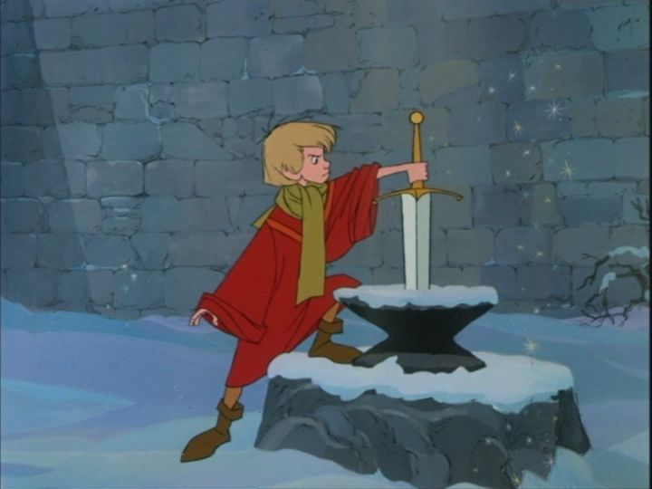

"The Sword in the Stone" is definitely a part of my childhood, probably one of the Disney movies I watched most often as a child. But even as a child, I didn't know why, and couldn't help but marvel at the missed opportunities of the story. After all, this is the story of the famous King Arthur. You might expect a story of adventure, sword fighting, and magic villains, perhaps like the climax of "Sleeping Beauty." But this was based on a novel by T.H. White about Arthur's childhood.. even better! We can watch the origin of the future King, his earliest adventures with magical creatures, under the guidance of the great wizard Merlin! But instead, the Disney movie is much simpler and low-stakes than that, an comes across as an educational film in disguise. But if that's the case, it might be one of the best educational films ever made. There's a lovely introduction that sets the scene, even though it's information doesn't play until the very final act. The King Uther Pendragon has died, and no heir is left to the throne. A war threatens to occur for the crown, but a mircale appears: the magical sword, locked in a stone and anvil, with an inscription that confirms that whomever pulls the sword out is the true king. But no one is able to put it out, so it stays, forgotten. Years later, we see Merlin, a man that's seen all of time and space, and isn't impressed, lamenting the lack of plumbing and electricity in the current dark ages. This isn't a regal, well-dressed man of mystery, but instead appears to be an old man in a plain blue sleeping gown and cap, with a massive white beard that gets tangled everywhere he goes. He lives in a hut in the forest with an educated, talking owl named Archimedes. His home is a mess, and everything about Merlin and his personality fits that "absent-minded college professor" archtype. He sometimes gets visions of the future, and foresees that someone important will join him for tea that day: this turns out to be Arthur (known by everyone as "Wart"), a scrawny and clumsy 12-year old working as a servant to his step father and brother, with hopes of becoming a squire (a knight's servant) one day. Without knowing Wart's future, Merlin insists on giving the boy a proper education, includinng reading and writing, mathematics, science and nature. And so Merlin does, through a series of lessons over the course of a year or so. We see a few of these lessons, where Merlin uses magic to help get the point across. In one adventure, he turns Wart into a fish, and in another a squirrel, and then a bird. Wart learns to outwit predators, the effects of love, and survives a fight with another evil wizard (the witch named "Mim"). Each adventure is pretty much a standalone vignette, and with the introduction of their meeting and the final bits of Wart finally pulling out the Sword (accidently), there's five clean acts in total, about 15 minutes each. No sword fights or action, no dragons or griffins. Just Merlin proving the power of using your brain instead of raw strength.  Even if it isn't as exciting as you might hope from a fantasy story, Merlin and Archimedes make a fun pair that I could watch for hours on end. When Merlin does use his magic, it's a delight, especially in early scenes when he makes his furniture move on its own. Even when the objects have no faces or arms, watching a chair move forward to sit a guest, or a row of books queued in air to enter a bag, puts a big grin on my face. The music score accents these magical moments perfectly. The rest of the songs in this musical might not be classics that you'd recall the words to, but the score is one of the most memorable and upbeat in Disney's movies. Beyond that, the animation follows "101 Dalmations" in having a limited budget and new techniques to enable it, but making the most of character animation within those limitations. It's probably the most low-budget-looking animated film Disney produced. It's also the first on Disney Plus to use a widescreen 16:9 presentation, although I'd swear image content was cut on the top and bottom. A lot of people complained online about the initial Bluray release, which indeed looks like a smooth and blurry image, as though it was taken from a VHS tape. The Disney Plus image retains a lot more grain, and therefore detail and sharpness, but colors tend to look fuzzy instead of uniform. While I like the voice acting and actor choices, everyone has such eccentric accents that it can be hard to catch every spoken word, even as an adult. And there's a bit of reused vocals, like Wart's catchphrase whenever he falls ("Whoa-Whoa-WHA-OH!"). It's fun to watch as a kid, but kind of messy to watch otherwise. "The Sword in the Stone" is an example of how, even with a low-effort story, Disney can still produce fun movies that stick around long enough to be a part of my nostalgic memories. T.H. White's original book was part of a series, and it'd be fun to see Disney create a follow up one day (the idea might even warrant their modern live-action spin-off practice).
- "Ani" More reviews can be found at : https://2danicritic.github.io/ Previous review: review_The_Swan_Princess Next review: review_The_Tale_of_Princess_Kaguya